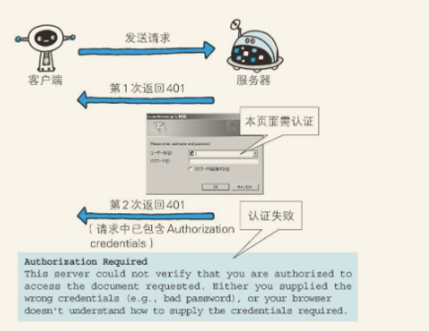

返回结果的HTTP状态码
HTTP状态码表示客户端HTTP请求的返回结果，标记服务器处理的是否正常，通知出现的错误等工作。
1.状态码告知从服务器端返回的结果
状态码的职责是当客户端想服务器发送请求时，描述返回的请求结果。借助状态码，用户可以知道服务器端是正常处理了请求，还是处理了错误。
数字中的第一位指定了响应类别，后两位无分类。响应类别有有以下5种
| 类别 | 原因短语 | |
|---|---|---|
| 1XX | Informational(信息性状态码) | 接受的请求正在处理 |
| 2XX | Success(成功状态) | 请求正常处理 |
| 3XX | Redirection(重定向状态码) | 需要进行附加操作以完成请求 |
| 4XX | Client Error (客户端错误状态码) | 服务器无法处理请求 |
| 5XX | Server Error (服务器错误状态码) | 服务器处理请求出错 |
只要遵守状态码类别的定义，即使改变RFC2616中定义的状态码，或服务器端自行创建状态码都没问题。
仅记录在RFC2616上的HTTP状态码就达40种，若再加上WebDAV 和附加HTTP状态码等扩展，数量就达60余种。别看种类繁多，实际上经常使用的大概只有14种。接下来我们就介绍经常用到的这几种
2. 2XX成功
2XX的响应结果表明请求被正常处理了。
2.1 200 OK
表示从客户端发来的请求在服务器端被正常处理了。
2.2 204 No Content
该状态码代表服务器接受的请求已成功处理，但在返回的响应报文中不含实体的主体部分。另外，也不允许返回任何实体的主体。
一般在只需要从客户端往服务器发送消息，而对客户端不需要发送新信息内容的情况下使用。
2.3 206 Partial Content
该状态码表示客户端进行了范围请求，而服务器成功执行了这部分的GET请求。响应报文中包含由 Content-Range 指定范围的实体内容。
3. 3XX 重定向
3XX 响应结果表明浏览器需要执行某些特殊的处理以正确处理请求
3.1 Moved Permanently
永久重定向。该状态码表示请求的资源已被分配了新的URI，以后应使用资源现在所指的URI。也就是说，如果已经把资源对应的URI保持为书签了，这时应该按Location 首部字段提示的URI重新保存。
3.2 302 Found
临时重定向。该状态码表示请求的资源已被分配了新的URI ，希望用户（本次）能使用新的URI访问。
和301 状态码相似，但302状态码代表的资源不是被永久移动，只是临时性质的。
3.3 303 See Other
该状态码表示由于请求对应的资源存在着另一个URI，应使用GET方法定向获取请求的资源。
303状态码和302状态码 有着相同的功能，但303状态码明确表示客户端应当采用GET方法获取资源，这点与302状态码有区别。
当301、302、303响应状态码返回时，几乎所有的浏览器都会把POST改成GET，并删除请求报文内的主体，之后请求会自动再次发送。
301、302 标准是禁止将POST方法变成GET方法的，但实际使用时大家都会这么做。
3.4 304 Not Modified
该状态码表示客户端发送附带条件的请求时，服务器端允许请求访问资源，但未满足条件的情况（也就是说不走服务端资源，走的缓存资源）。304状态码返回时，不包含任何响应的主体部分。304虽然被划分在3xx 类别中，但是和重定向没有关系。
附带条件的请求是指采用GET方法的请求报文中包含 if-Match,if-Modified-Since ,If-None-Match,If-Range,If-Unmodified-Since中任一首部。
3.7 307 Temporary Redirect
临时重定向。该状态码与302Found 有着相同的含义。尽管302标准禁止POST 变换成GET，但实际使用时大家并不遵守。
307会遵照浏览器标准，不会从POST变成GET，但是，对于处理响应时的行为，每种浏览器有可能出现不同的情况。
4. 4XX客户端错误
4XX 的响应结果表明客户端是发生错误的原因所在。
4.1 400 Bad Request
该状态码表示请求报文中存在语法错误。当错误发生时，需修改请求的内容后再次发送请求。另外，浏览器会像200 OK 一样对待该状态码。

该状态码表示发送的请求需要有通过HTTP认证的认证信息。另外若之前已进行过1次请求，则表示用户认证失败。
4.3 403 Forbidden
该状态码表明对请求资源的访问被服务器拒绝了。
未获得文件系统的授权，访问权限出现问题等列举的情况都可能是发生403的原因
4.4 404 Not Found
该状态码表明服务器上无法找到请求的资源。除此之外，也可以在服务器端拒绝请求且不想说明理由时使用。
5. 5XX服务器错误
5XX 的响应结果表明服务器本身发生错误。
5.1 500 Internal Server Error
该状态码表明服务器端在执行请求时发生了错误。也有可能是WEB应用存在的Bug 或某些临时的故障。
该状态码表明服务器暂时处于超负荷或正在进行停机维护，现在无法处理请求。如果事先得知解除以上状态需要的时间，最好写入首部字段再返回给客户端
状态码和状况的不一致
不少返回的状态码响应都是错误的，但是用户可能察觉不到这点。比如Web应用程序内部发生错误，状态码依然返回200 OK，这种情况经常遇到。